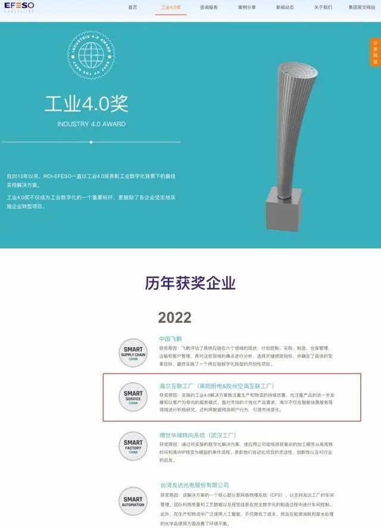
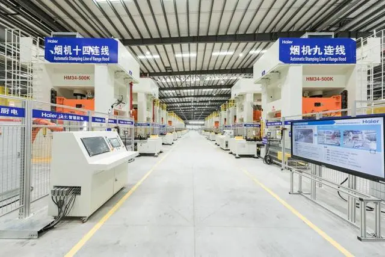

中国独家！海尔厨电互联工厂获全球“工业4.0奖”
11月30日，2022年“工业4.0奖”获奖名单正式揭晓，其中海尔空调和海尔厨电2家互联工厂获奖，实现了海尔智家在国际智能制造领域的引领，打造行业首批服务转型的工业4.0示范标杆。

作为中国唯一一家入选的厨电企业，海尔厨电互联工厂代表中国厨电行业角逐国际奖项，率先实现了从大规模制造到大规模定制的战略转型。在场景生态领域，海尔厨电也为用户带来智慧便捷的烹饪体验，实现“从农场到餐桌”买、存、做、吃，全流程的美食生活新体验，为智慧厨房场景提供了制造支撑。

创新全流程业务模式，角逐国际权威奖项
据了解，“工业4.0奖”始于2013年，由ROI-EFESO（瑞欧盈-埃非索）组织评选，作为一项非营利评选奖项，主要表彰在智能工厂、智能供应链、智能服务、智能可持续等方面推进杰出的数字化转型企业，现已成为德语国家中最负盛名的行业奖项之一。
海尔厨电互联工厂致力于打造全球厨电行业多品类、用户全流程参与的大规模定制示范基地，取得显著成果。基于卡奥斯COSMOPlat以用户为中心的大规模定制模式及数字化赋能经验，海尔厨电互联工厂成功入选 ROI-EFESO“工业 4.0中国奖”，作为中国唯一一家入选的厨电企业，打造了首批服务转型的工业 4.0 示范标杆，角逐国际一流权威奖项的同时，展示出智能服务的“中国实力”。
引领数字化转型、打造全球行业标杆，为什么海尔厨电做到了？其实，海尔厨电互联工厂是目前全球范围内厨房电器品类最全、产能最大、工厂柔性最强、自动检测技术最全面的新型成套智慧厨电一体化工厂。海尔厨电互联工厂通过工业 4.0 技术，赋能研发、采购、制造、服务等全流程创新业务新模式，率先实现从大规模制造到大规模定制的战略转型，为用户带来更高效、更高品质的服务体验，也取得行业唯一的奖项。